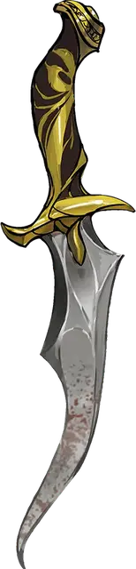

Высекающий искры
Tinderstrike
Оружие (кинжал), легендарное (требуется настройка)

Рекомендованная стоимость от 50 001 зм
Высекающий искры — это необычайно острый кремниевый кинжал. Если ударить им по чему нибудь твёрдому, с его лезвия срывается сноп искр.
Кинжал всегда тёплый на ощупь, а после того, как нанести им урон, его клинок будет тлеть на протяжении 1к4 минут. В нём содержится частичка силы Имикса, Принца Злого Огня.
Вы получаете +2 к броскам атаки и урона этим магическим оружием. При попадании цель получает дополнительный урон огнём 2к6.
Власть над огнём. Если вы вооружены этим кинжалом, то получаете следующие преимущества:
- Вы свободно говорите на Игнане.
- Вы обладаете сопротивлением урону огнём.
- Вы можете наложить заклинание подчинение чудовища [dominate monster] (Сл спасброска 17) на огненного элементаля [fire elemental]. Если вы наложили это заклинание, то не сможете вновь использовать данное свойство до следующего рассвета.
Танец всепожирающего огня. Находясь в элементальном узле огня, вы, с помощью высекающего искры, можете совершить ритуал под названием «Танец всепожирающего огня», который позволит вам создать огненную сферу опустошения [devastation orb of fire] (см. описание сфер опустошения для информации о времени и стоимости ритуала). После окончания ритуала вы не сможете повторить его до следующего рассвета.
Слабость. Высекающий искры делает своего владельца нетерпеливым и безрассудным. Пока существо настроено на это оружие, оно получает следующую слабость: «Я действую спонтанно и постоянно рискую, не думая о последствиях».